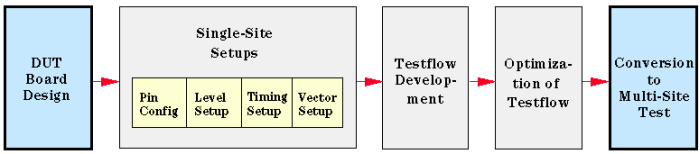

Typical Development Path
Typically the preparation of multisite testing involves the following steps (shown schematically in the figure below):
- Design and manufacture of a DUT board with multiple sites.
- Supply of a Handler/Prober Library featuring multisite testing
- Single-Site setups for one device and specification of suitable pass/fail parameters.
- Development of a single-site testflow.
- Test the single site testflow and optimize it for best throughput
- Conversion to a multisite test by defining all sites (see Defining additional test sites) and
ensuring all pins have valid channel assignments.

Conversion from a single-site setup to a multisite setup is very simple as it is almost completely software driven. All single-site tests and setups can be converted.
There are, however, some specifics with the DUT board design and with the Pin Configuration. The following sections will focus on these differences.
With a mixed signal or analog setup, you may need to consider more aspects.
Functional changes
- Introduced before SmarTest 6.3.2